How the current 10×10 squares board holds up for participants checking their own square and following results on a phone, what to fix first, and a working mockup of the proposed mobile layout.
Overall: the board is a faithful, compact port of the desktop page, and it fits a phone screen without sideways scrolling. The biggest opportunity is that the page is still organised around the grid instead of around the two things a participant on a phone actually wants: find my square and what it has paid, and what just happened. Three mechanics also fight the phone directly: a scroll gesture that starts on the board opens a popup, the newest game is the last of 63 items inside a nested scroll area, and the round colours are too faint to tell apart.
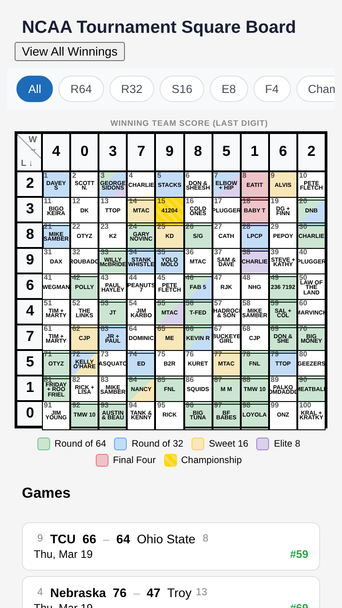
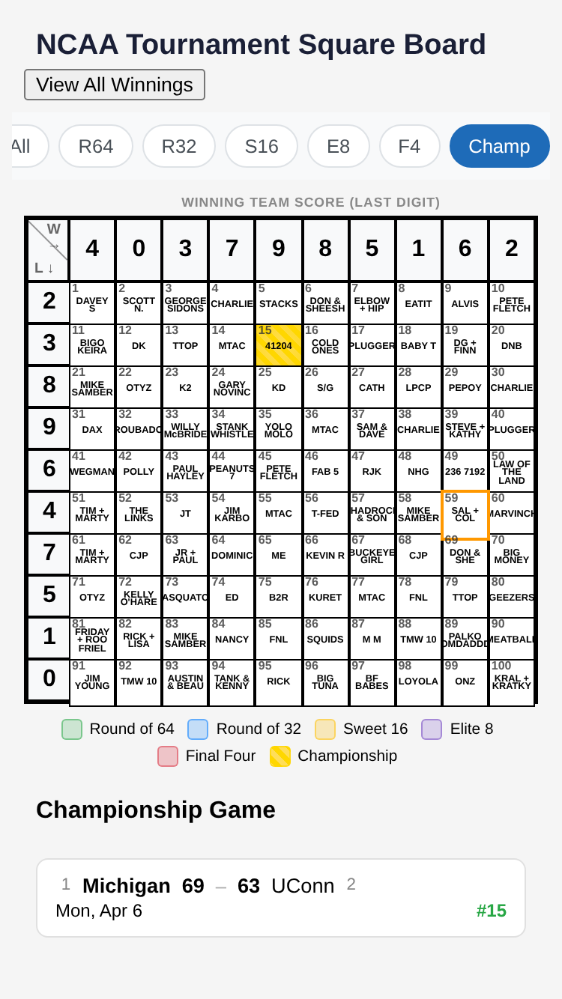
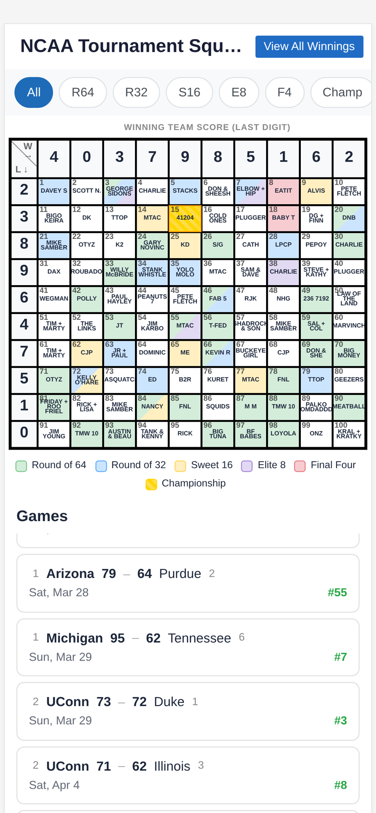
The eye lands on the grid, which is the right object, but the grid says little on its own: pale tints, tiny names, and no sense of what any square has earned. The second thing the eye finds is the 'View All Winnings' button crowding the title. Nothing on the first screen answers "did my square win?" or "who won the last game?". The purpose is clear to someone who already knows squares pools; it is not clear what to tap.
| Finding | Severity | Recommendation |
|---|---|---|
| A scroll gesture that starts on the board opens a square popup. Cells handle touchend and call preventDefault, so a drag across the board ends with a popup for whichever cell the finger left. Reproduced: a vertical swipe over square 45 scrolled the page and opened "Square #45". | Critical | Drop the touchend handlers and use click only (browsers no longer add a tap delay with a proper viewport meta). If touch handling stays, ignore touchend when the touch moved more than about 10px or lasted longer than 300ms. |
| Latest results are buried. Games render oldest first, so the championship is item 63. The list lives in a nested 50vh scroll area below the board, so reaching the newest game means scrolling the page, then scrolling the list to the bottom. | Critical | Sort newest first, group by day, and remove the inner scroll area on phones so the page is the only scroll. Put a one-line "latest result" in the header. |
| No way to find your square. There is no search, names are 6.4px, six are clipped (TROUBADOR, SHADROCK & SON, MARVINCH, SASQUATCH, PALKO HOMDADDDY, MEATBALL), and the same owner appears on several squares (MTAC ×4, CHARLIE ×3, MIKE SAMBER ×3, TIM + MARTY ×2, TTOP ×2, OTYZ ×2, CJP ×2, PLUGGER ×2, FNL ×2, TMW 10 ×2, PETE FLETCH ×2). | Critical | Add a name search that highlights matches and lists them with totals. Let a viewer mark "my square" so it is pinned at the top with its running total. |
| Tapping a game scrolls the board into view, pushing the games list off screen; the user loses their place and must scroll back. The orange highlight also persists through filter changes. | Moderate | Open the square's details in a bottom sheet instead of scrolling. Clear the highlight when the filter changes or another game is tapped. |
| The square popup is not a real modal. The page keeps scrolling behind it, Escape does nothing, focus is not moved or trapped, and there are two Close controls. On a long list the footer Close is below the fold. | Moderate | Use a bottom sheet (or <dialog>) with scroll lock, Escape and swipe-to-dismiss, one close affordance, and the total pinned at the top. |
| Round filter row overflows. Seven pills need 394px but only 380px are available at 390px wide. "Champ" is cut off and there is no visual cue that the row scrolls. | Moderate | Make it a seven-cell segmented control with equal widths. Each cell fits "R64" plus the payout underneath at 390px. |
| Payout schedule is invisible. The $100 to $4,000 per-round amounts appear only inside a square's popup, so a user cannot tell what a given result was worth from the board or the list. | Moderate | Show the payout under each round filter and the "+$" amount on every game card next to the winning square. |
| Winnings summary is a 51-row table in a centred modal taller than the screen, with no pot total at the top and no indication of where the viewer's own square ranks. | Moderate | Give it its own Leaders tab with pot total, squares paid, rank numbers and the viewer's square highlighted. |
| Landscape phones break the board. At 844×390 the cell size rule stretches cells to fill the width, the board becomes 844px tall and only three rows are visible. | Moderate | Cap cell size by the smaller viewport dimension, or lock the board to a fixed cell size and scroll it inside its container. |
| Hover handlers run on touch. mouseenter/mouseleave colour the row and column headers; on iOS the emulated mouseenter fires on tap and the headers stay tinted until the next tap. | Moderate | Guard header highlighting with a hover media query, or move it to CSS and apply it to the open square only. |
| Title is truncated to "NCAA Tournament Squ…" because the winnings button shares the header row. | Minor | Shorten the title on phones and move the winnings action to a tab or a secondary row. |
| The championship cell animates a glow forever, and the animation does not respect prefers-reduced-motion. | Minor | Keep the striped gold fill, drop the animation or wrap it in a reduced-motion query. |
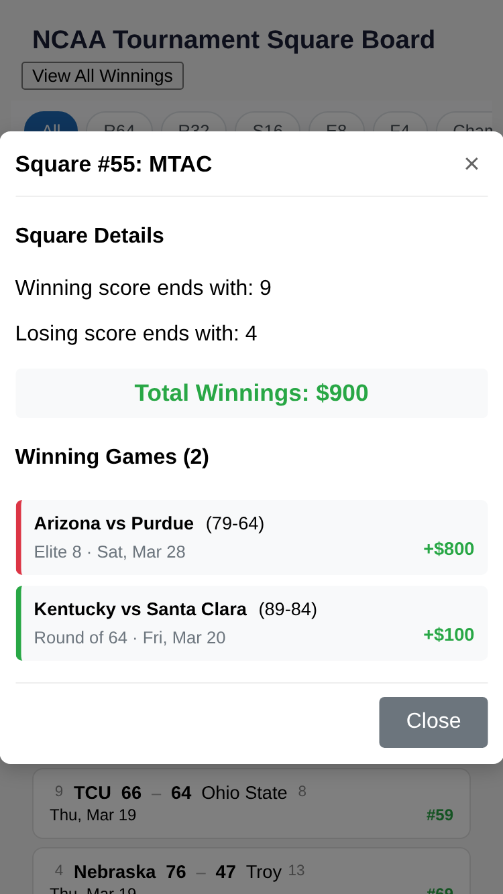
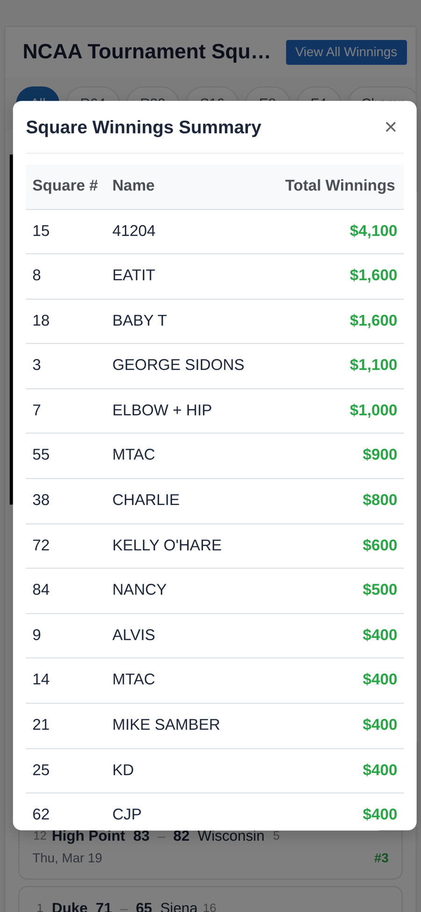
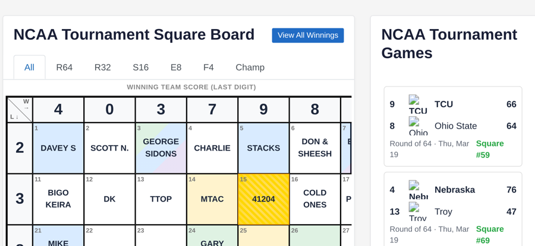
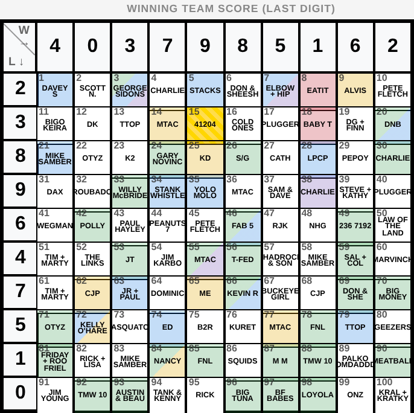
| Element | Issue | Recommendation |
|---|---|---|
| Round colours | Three different palettes: cell tints, legend swatches, and the popup's left borders (where round 3 is orange and round 4 red, not yellow and purple as on the board). The winnings table uses none of them. | One set of six round tokens used for cells, legend, filter dots, game cards, sheet and leaderboard bars. |
| Colour language | Green means "Round of 64" on the board and "money" everywhere else. | Keep green for money only; give Round of 64 a teal or another hue that does not read as currency. |
| Type scale | Eleven distinct font sizes between 6.4px and 24px on the phone layout, most set with rem fractions in media queries. | Six steps: 11, 12, 13, 15, 18, 22px, with a condensed display face for scores and totals. |
| Spacing | Per-element margins (card-header, legend, games header) with different values at each breakpoint; the 576px block sets --cell-size twice. | Use gap on flex/grid parents and a 4px spacing scale. |
| Interaction | Board cells, game cards and win items all open or highlight different things with the same visual affordance (none). | Every tappable surface should look tappable and lead to the same place: the square sheet. |
| Copy | "Square #55: MTAC", "Winning score ends with: 9", "View All Winnings", "NCAA Tournament Games" read as labels from the data model. | "#55 MTAC · wins when the winner's score ends in 9 and the loser's ends in 4", "Leaders", "Results". |
| Text | Colour | Ratio | Result |
|---|---|---|---|
| Square number and payout green | #28a745 on white | 3.13:1 | Fail |
| Score separator dash | #aaaaaa on white | 2.32:1 | Fail |
| Seeds and axis label | #888888 on white | 3.54:1 | Fail |
| Cell ID at 768px breakpoint | #777777 on white, 8px | 4.48:1 | Fail |
| Muted meta text | #626976 on white | 5.52:1 | Pass |
| Round of 64 vs Round of 32 tint | #d4edda vs #cce5ff | 1.04:1 | Indistinguishable |
| Any two round tints | 20–25% alpha on white | ≤1.28:1 | Indistinguishable |
| Active-game highlight vs Sweet 16 tint | #ffc107 vs #fff0c2 | 1.43:1 | Indistinguishable |
The mockup below is a working page built from the real board names and all 63 results. It keeps the shuffled digit headers and the payout schedule and reorganises the phone experience around three tabs. Open it on a phone, or narrow the window, to use it full-bleed.
Open the interactive mockup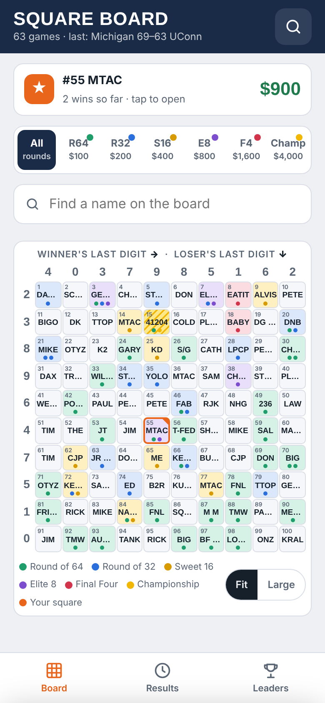
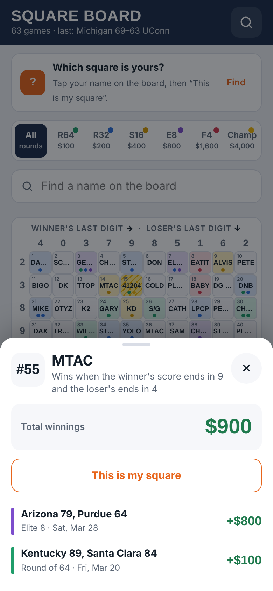
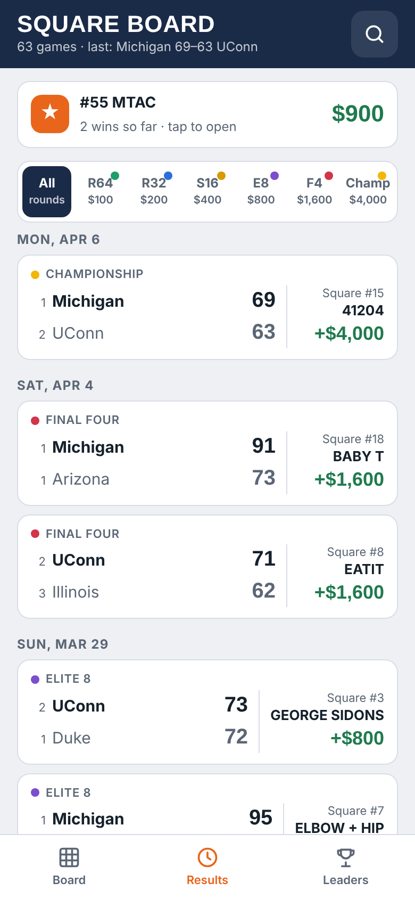
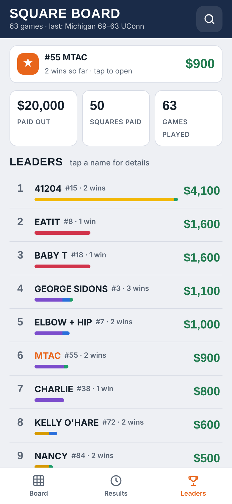
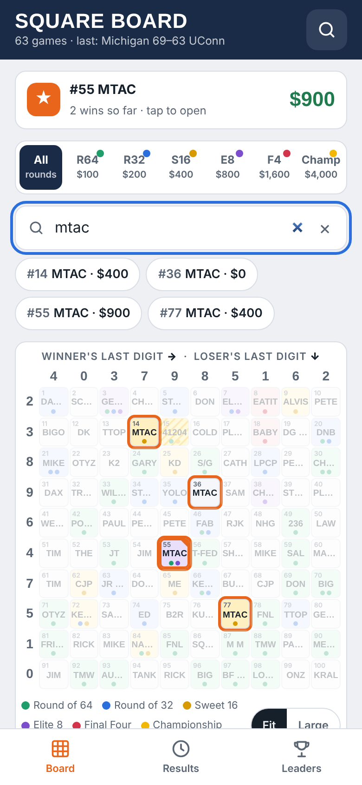
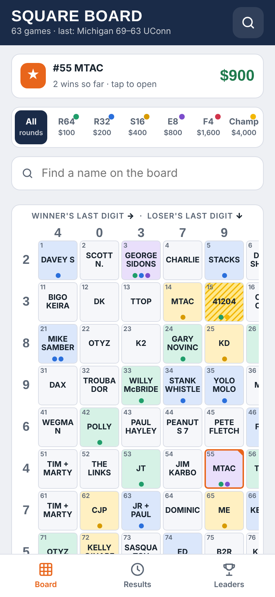